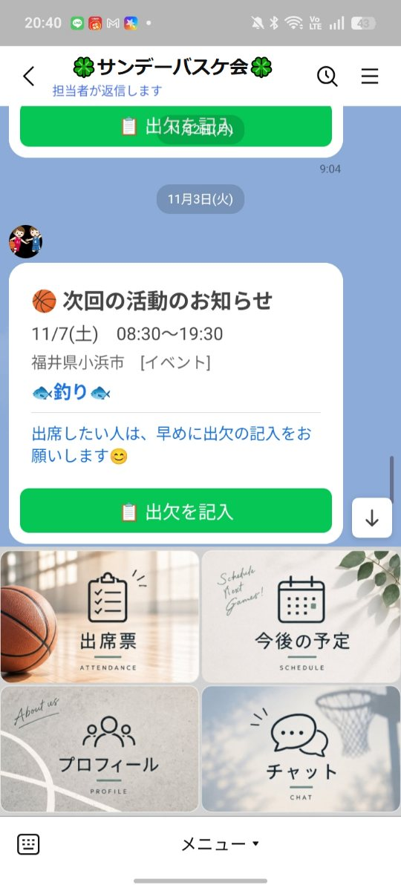
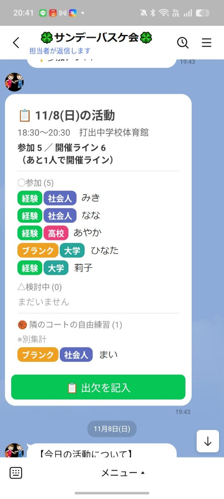

🏀 サークル出欠アプリのしくみ
LINE公式アカウント ＋ LIFF ＋ Google Apps Script ＋ スプレッドシートで動く、社会人バスケサークル向けの出欠管理アプリ。
画面キャプチャの名前・サークル名はすべて架空のものに置き換えています。運営側の管理画面（運営コンソール）はこの資料では扱いません。
1. 何をするアプリか
毎週の活動の「誰が来るか」を、メンバーが普段の LINE だけで記入・確認できるようにしたもの。新しいアプリのインストールは不要で、入口はすべて LINE 公式アカウントのメニューです。
- 出席票：活動日ごとに「参加／検討中／不参加／自由練習」をワンタップで記入。参加者の顔ぶれが、レベル・区分・交通手段のバッジ付きで見える。
- プロフィール：表示名・レベル・区分・交通手段を最初の1回だけ登録。以後は出席票に自動で反映される。
- 今後の予定：公開中の活動を一覧で確認する読み取り専用ページ。
- 自動配信：活動の6日前を基本に「次回の活動のお知らせ」、3日前に「出欠カード」が公式アカウントから届く。
- チャット：LINE のオープンチャット（開発物ではない）。メニューからリンクしているだけ。
設計の軸
- メンバーの手軽さが最優先。出欠の記入は LINE 内で完結し、プロフィールは1回きり。
- 不参加は表に出さない。他のメンバーに見えるのは「参加」「検討中」「自由練習」の顔ぶれだけ。
- 登録していなくても回答できる。未登録の人は「未登録」バッジで表示され、登録は促すだけでブロックしない。
- 表示名は本名でなくてよく、年齢欄はない。
- データはスプレッドシートに置く。運営者が代わってもシートを見れば直せる状態を保つ。
- サーバ費用は0円。GitHub Pages、Google Apps Script、スプレッドシートの無料枠だけで動いている。
2. 全体の構成
矢印の向きはデータの流れ。緑＝画面からの問い合わせ、橙＝公式アカウントからの配信、青＝シートの読み書き。スマホでは図を横にスクロールできます。
ひとことで言うと
- 画面は GitHub Pages の静的 HTML。LIFF の仕組みで LINE 内ブラウザに開き、
liff.getProfile()で LINE の userId を取る。 - サーバは Google Apps Script（GAS）1本。画面からは
?action=…付きの GET（JSONP）で呼び、LINE からは Webhook（POST）で呼ばれる。 - データはスプレッドシート。GAS がシートを読み書きし、必要なときに LINE の Messaging API で全員にメッセージを配る。
- 自動配信は GAS の時間トリガー。毎朝1回、活動日シートを見て「お知らせ」「出欠カード」を送るか判定する。
GAS の HtmlService は sandbox の iframe で動き LIFF の初期化が完了しないため、画面は GAS に置かず静的ホスティングに分けている。GAS 側は JSONP（callback(…) 形式の JavaScript）を返す。
3. メンバーから見た姿
3-1. 公式アカウントのトークと、自動で届くメッセージ



- メッセージはすべて LINE の Flex Message（JSON で組むカード型メッセージ）。GAS 側の
NotifyApp.jsが組み立てる。 - 全員に同じ内容を broadcast API で送るため、カードに個人の回答状況は載せない。締切（活動の2日前）までは「まだの人は M/d(曜)までに、回答済みの人も変更があればお願いします🙏」の共通文言が付き、締切を過ぎてから送った場合はこの行ごと消える。
- 名簿の各行は 経験ブランク初心未登録 のレベルと、高校大学社会人 の区分を角丸バッジで示す。体験者・同伴は 体験同伴 が先頭に付き、2行目に「（◯◯さんの紹介）」「（◯◯さんの同伴）」が入る。
- 中止のお知らせはテキスト。「⚠️【中止のお知らせ】M/d(曜) HH:mm〜HH:mm の活動は中止です🙏」＋運営が書いた理由（任意）。中止した回が次回の活動なら「また次回、よろしくお願いします😊」、隣のコートの自由練習に1人以上いれば「※隣のコートの自由練習も、あわせて中止です。」が自動で付く。
3-2. 出席票（attendance.html）


リッチメニューの「出席票」から開く LIFF 画面。公開中で今日以降の活動が日付順にカードで並ぶ。1枚のカードに入っているもの：
- 日付、種別タグ（通常活動／練習試合／イベント）、名称（あれば）、時間と会場
- 参加 n ／ 開催ライン m、「あと k 人で開催ライン」または「開催ライン到達！」、進捗バー
- 内訳：経験・ブランク・初心（・未登録）の人数。体験・同伴がいれば「（うち体験◯・同伴◯）」
- ◯参加 と △検討中 の名簿。隣のコートの自由練習は1人以上いるときだけ「※別集計」付きで表示
- 「＋ 体験者・同伴を追加」ボタン（後述）
- 回答ボタン ◯参加／△検討中／×不参加。通常活動・イベントの日は 🏀 自由練習（隣のコート） も
- 右下に「あなたの回答：参加」など自分の状態。不参加は自分にだけ見え、名簿には出ない。
ボタンを押した瞬間に画面を書き換え、サーバへの保存は裏で行う（楽観的更新）。保存に失敗したときだけ警告を出して読み直す。送信中はその活動のボタンを無効化して連打を防ぐ。
体験者・同伴の代理登録：「＋ 体験者・同伴を追加」で、種別（体験の方／家族・同伴）・名前・レベルを入力すると、LINE を持たない人を紹介者が代わりに名簿へ入れられる。人数と開催ラインに数え、削除できるのは追加した本人だけ（画面の✕表示とサーバ側の紹介者 ID 照合の二重チェック）。
プロフィール未登録の人も回答できる。名簿には 未登録 バッジで出て、画面上部に登録を促す黄色いバナーが出るだけ。
3-3. プロフィール登録（profile.html）

- 入力項目は 表示名／レベル（経験者・ブランク勢・初心者）／区分（高校生・大学生・社会人）／交通手段（電車 京都方面・電車 草津方面・車・自転車・徒歩） の4つ。すべて必須。
- 表示名の初期値は LINE の表示名。登録済みなら前回の内容が入った状態で開く（端末の localStorage にも控えを置き、サーバ応答を待たずに表示）。
- 保存先はメンバーシート。userId で1行、再登録は同じ行を上書き。
- 新規登録のときだけ、①本人の発言として「プロフィールを登録しました！登録名は「◯◯」です。よろしくお願いします☺」をトークに送る（
liff.sendMessages。運営側のチャット一覧に本人が現れ、個別に連絡できるようになる）、②サーバにsendWelcomeを依頼して0.5秒後に画面を閉じる。トークに戻ると「💬 最後のお願い」（グループLINE参加のボタン付きカード）が新着で届く。
友だち追加からの流れ
- 公式アカウントを友だち追加 → Webhook の follow イベントを GAS が受け、「◯◯さん、はじめまして。友達登録ありがとうございます☺／まずは、プロフィールの登録をお願いします。最初の1回だけです。」＋「👤 プロフィールを登録」ボタンを返す。登録済みの人の再追加には「おかえりなさい☺」だけ返す。
- ボタンからプロフィール登録 → 上記の本人発言と「💬 最後のお願い」カード。
- グループLINE（オープンチャット）に参加して準備完了。
普段のテキストメッセージには自動返信しない（運営が手動で返す）。運営側で「管理者不在モード」を ON にしている間だけ、不在の案内とチャットへのボタンを返す。
3-4. 今後の予定（schedule.html）
公開中の活動を上から順に並べる読み取り専用のページ。各行に日付、種別タグ（通常活動／練習試合／イベント／お休み）、名称、時間と会場、◯参加(n) と △検討中(n) の名前の列挙、自由練習がいれば 🏀自由練習(n)。お休みの回は日付と種別だけ。出席票と同じ API（getBoard）の結果を、バッジ無しの簡易表示にしている。
4. データの持ち方（スプレッドシート）
すべて1つのスプレッドシートに、シート＝テーブル、1行＝1レコードで置く。人の識別はすべて LINE の userId。運営がシートを直接編集しても動く（活動日は日付を入れるとイベント ID が自動採番される）。
活動日
| 列 | 項目 | 内容 |
|---|---|---|
| A | イベントID | EV-yyyyMMdd。日付を入力すると onEdit が自動採番（同日2件目は -2） |
| B | 日付 | 活動日 |
| C／D | 開始／終了 | "18:00" のような文字列。時刻型で保存されても読み出し時に HH:mm に正規化 |
| E | 会場 | 空欄なら既定の体育館名 |
| F | 種別 | 通常活動／練習試合／イベント／お休み（入力規則） |
| G | 開催ライン | この人数で開催、の目安。回ごとに自由設定 |
| H | 公開 | チェックボックス。OFF の行は出席票・予定・自動配信のどれにも出ない（下書き・会場未定の週を隠す） |
| I | 名称 | 任意。イベント名や対戦相手など。あれば各画面で青の太字 |
メンバー
| 列 | 項目 | 内容 |
|---|---|---|
| A | LINEユーザーID | 主キー |
| B | 表示名 | 本人が入力した名前 |
| C | レベル | 経験者／ブランク勢／初心者 |
| D | 登録日時 | 登録・更新のたびに上書き |
| E | 交通手段 | 電車(京都方面)／電車(草津方面)／車／自転車／徒歩 |
| F | 区分 | 高校生／大学生／社会人 |
| G | 写真 | 運営だけが使う印（空欄＝SNS 掲載OK／NG）。メンバー向けの画面には出さない |
出欠
| 列 | 項目 | 内容 |
|---|---|---|
| A | イベントID | （イベントID, LINEユーザーID）で1行。同じ組み合わせは上書き |
| B | LINEユーザーID | |
| C | 状態 | 参加／検討中／不参加／自由練習 の4値。1人1状態（自由練習は「隣のコートに行く」という第4の状態） |
| D | 更新日時 |
ゲスト（体験者・同伴）
| 列 | 項目 | 内容 |
|---|---|---|
| A | ゲストID | G＋UUID 先頭8桁 |
| B | イベントID | その回だけの登録（毎回来るわけではないので、来る日に追加する） |
| C | ゲスト名 | 20文字まで |
| D | レベル | 経験者／ブランク勢／初心者 |
| E | 紹介者ID | 追加したメンバーの userId。削除権限と「（◯◯さんの紹介）」表示に使う |
| F | 登録日時 | |
| G | 種別 | 体験／同伴。同伴＝LINE を持たない家族（親子で来るお子さんなど）。空欄は体験扱い |
そのほか
- 友だち（LINEユーザーID／初回日時）：API や Webhook で見かけた userId を記録しておくだけのシート。
- 管理者（LINEユーザーID）：運営コンソールの権限判定用。この資料では省略。
- Channel access token などの秘密情報はシートではなく GAS のスクリプトプロパティに置く。
5. 画面とサーバのやり取り（API）
画面（GitHub Pages）から GAS へは、<script src="…/exec?action=…&userId=…&callback=jcb_1"> を動的に差し込む JSONP。GAS は jcb_1({ ok:true, data:…, ms:… }); という JavaScript を返す。ms はサーバ内部の所要時間で、遅いときの切り分け用。
| action | 主な引数 | すること | 使う画面 |
|---|---|---|---|
getInit | userId | 公開中の活動一覧（名簿・人数つき）＋自分のプロフィールを1回でまとめて返す | 出席票の起動 |
getBoard | userId | 活動一覧だけ | 出席票の再読込、今後の予定 |
setAttendance | userId, eventId, status | 出欠シートに1行 upsert | 出席票 |
addGuest | eventId, name, level, kind, userId | ゲストシートに追加、ゲストIDを返す | 出席票 |
removeGuest | guestId, userId | 紹介者が一致するときだけ行を削除 | 出席票 |
getProfile | userId | メンバーシートの自分の行 | プロフィール |
saveProfile | userId, displayName, level, category, transport | メンバーシートに upsert。新規か更新かを返す | プロフィール |
sendWelcome | userId | 登録後の案内カードを push（直近10分以内に登録した人だけ） | プロフィール |
ping | なし | シートを触らない最小応答。往復時間の基準 | 計測用 |
このほかに運営コンソール用の admin* 系がある（省略）。POST は LINE の Webhook と、運営コンソールからの PDF 保存だけ。
出席票を開いてから「参加」を押すまで
liff.init→ 未ログインならliff.login()→liff.getProfile()で userId と LINE 表示名を取得。getInitを1回呼び、活動一覧と自分のプロフィールを受け取って描画。プロフィールがnullなら未登録バナーを出す。- 「◯参加」を押す → 画面上の名簿を即座に書き換え（自分を参加に移し、人数・バーを再計算）→ 裏で
setAttendance。 - GAS は
LockServiceで排他しながら出欠シートの該当行を上書き（無ければ追加）し、キャッシュを捨てる。 - 失敗応答のときだけ警告を出して
getBoardで読み直す。
サーバ側の返すデータ（活動1件ぶん）
{
eventId: "EV-20261129", date: "11/29(日)", eventName: "",
time: "18:00〜20:00", venue: "◯◯中学校体育館", kind: "通常活動", line: 6,
join: [ { displayName:"みき", level:"経験者", category:"社会人", transport:"電車(草津方面)", me:true },
{ displayName:"ゲスト花子", level:"初心者", isGuest:true, kind:"体験", guestId:"G1a2b3c4d", byUserId:"U…", byName:"みき" } ],
undecided: [ … ], shooting: [ … ], // 検討中／隣のコートの自由練習
joinCount: 2, undecidedCount: 0,
myStatus: "参加", myShooting: false // 自分の状態（不参加もここにだけ入る）
}名簿に不参加の人は含めない。不参加はシートには記録されるが、他人に返すデータには一切載らない。
6. 自動配信のルール
GAS の時間トリガーで 毎朝9時台に1回 sendThursdayCards が動き、活動日シートの「公開 ON かつ お休み以外」の行を見て判定する。配信は公式アカウントの友だち全員への broadcast。
| メッセージ | いつ送るか | 中身 |
|---|---|---|
| 次回の活動のお知らせ | 「前回の活動の翌日」と「6日前」の遅いほう。それが3日前以降になるとき（間隔が4日以下）は送らず、出欠カードに任せる | 日時・会場・［種別］・名称、「出席したい人は、早めに出欠の記入をお願いします😊」、出席票を開くボタン |
| 出欠カード | 活動の3日前（日曜の活動なら木曜） | 人数と開催ライン、◯参加／△検討中／自由練習の名簿、締切（2日前）の案内、出席票を開くボタン |
| 中止のお知らせ | 運営が手動で送る | テキスト（3-1 参照） |
「前回の活動」は公開かつお休み以外の活動日のうち直前のもの。お知らせを前回の活動より前に出さないための決まり。
7. 集計と表示のルール
| 項目 | ルール |
|---|---|
| 参加人数（joinCount） | 状態「参加」のメンバー ＋ その回のゲスト（体験・同伴）全員 |
| 開催ライン | 活動日シートの G 列。残り = 開催ライン − 参加人数。0 以下で「開催ライン到達！」、進捗バーは 参加人数 ÷ 開催ライン（上限100%） |
| 検討中・自由練習 | 名簿には出すが、参加人数と開催ラインには数えない（自由練習は「※別集計」と明記） |
| 不参加 | 記録はするが、本人の「あなたの回答」以外のどこにも出さない |
| 自由練習ボタン | 種別が通常活動またはイベントの日だけ表示（隣のコートが使える日）。練習試合の日は出ない |
| 内訳 | 参加名簿のレベル別人数。体験・同伴もレベルに含めたうえで「（うち体験◯・同伴◯）」を添える |
| 名簿の並び | 出欠シートの行順（＝最初に回答した順）。ゲストは末尾 |
| 表示する活動 | 公開 ON かつ 今日以降、日付昇順。過去の回は出さない |
| 締切 | 活動の2日前。カードの文言にだけ使い、過ぎても記入自体はできる |
8. 速さと安定のための工夫
GAS の Web アプリは「デプロイした人として実行」で公開しているため、誰がアクセスしても同じユーザーの実行として扱われ、同時アクセスが1件ずつ順番に処理される。1回のシート読みが2〜3秒かかると、同時に開いた人数ぶんの待ち時間が積み上がる。そのための対策：
- 読み取りデータをキャッシュ：活動・メンバー・出欠・ゲストを整形済み JSON にして
CacheServiceに7分置く（getBoardSource_）。シートの生の値は載せない（時刻セルが JSON で壊れるため）。容量上限 100KB に収めるため、今日以降の公開分だけ。 - 5分ごとのトリガーでキャッシュを作り直す（
refreshBoardCache）。メンバーが開いたときはほぼ必ずキャッシュがある状態にする。内部処理は 2〜3秒 → 0.03〜0.1秒。 - 書き込んだら捨てる：出欠・ゲスト・プロフィールの保存、活動日の編集のあとに
clearBoardCache_()。アプリ経由の変更は即反映され、古く見えるのはシートを直接手で書き換えたときだけ（最大5分）。 - 起動の通信を1本に：出席票は
getInitで活動一覧とプロフィールをまとめて取る。前回の userId を端末に覚えておき、2回目以降はliff.initを待たずに問い合わせを始めて並行させる（取得した userId が違えば取り直す）。 - 長く待って、中断のときだけやり直す：タイムアウト25秒、10秒経ったら「通信が混み合っています」に文言を変える。やり直すのは
<script>の読み込みが中断された（onerror）ときだけ1回。addGuestは二重登録になるのでやり直さない。 - 楽観的更新：出欠ボタン、体験者・同伴の追加／削除は押した瞬間に画面を進め、通信は裏で待つ。
- 書き込みは
LockServiceで排他。送信中は該当の活動のボタンを無効化して連打を防ぐ。 - すべての応答に
ms（サーバ内部時間）を載せる。内部が小さいのに往復が長ければ Google 側の受付待ち、内部も長ければ自分たちのシート読みが原因、と切り分けられる。
9. 設計上の割り切り
- 認証は LIFF の userId を信用するだけ。画面が
liff.getProfile()で得た userId をクエリに付け、サーバはそれを本人として扱う（ID トークンの検証はしていない）。サークル内の出欠票という用途に合わせた割り切り。 - 通信は JSONP（GET）。失敗の検知は
onerrorとタイムアウトのみで、HTTP のステータスは見えない。 - 速度の限界は GAS 側。Google の受付部分だけで往復1.2〜1.7秒かかり、時間帯によってはさらに詰まる。アプリ側の高速化は上記で打ち止めで、これ以上は基盤を変えるしかない。それでもスプレッドシート＋GAS を選んでいるのは、運営者が交代してもシートを見て直せること、個人情報を第三者のサーバに置かないこと、費用0円を優先しているため。
- 公開リポジトリに個人情報を置かない。名簿はシートだけにあり、HTML が受け取るのは API の応答のみ。運営用の書類の保存先なども HTML には書かず GAS 側から渡す。
- 出欠カードのボタンは「出席票を開く」1つだけ。カードは画面より縦に長く、カード上で回答すると結果の返信がカードの下に隠れて見えない。LIFF なら全画面で結果が分かり、自由練習・体験者の追加も同じ画面でできる。
10. ファイル構成と反映の手順
| 置き場所 | ファイル | 役割 |
|---|---|---|
| GitHub Pages （静的） | attendance.html | 出席票。LIFF ID、API の URL、描画、楽観的更新、ゲストのモーダル |
schedule.html | 今後の予定（読み取り専用） | |
profile.html | プロフィール登録。本人発言の送信、登録後の案内の依頼 | |
admin.html／menu-maker.html | 運営コンソール／リッチメニュー画像の生成（この資料では省略） | |
| Google Apps Script | LineBot.js | doGet（action の振り分け）・doPost（Webhook）・LINE API 呼び出し・友だち追加時の案内 |
AttendanceApp.js | 活動一覧の組み立て、出欠の upsert、キャッシュ、イベント ID の自動採番 | |
ProfileApp.js | プロフィールの取得・保存、登録後の案内 | |
GuestApp.js | 体験者・同伴の追加・削除 | |
NotifyApp.js | Flex メッセージの組み立て、自動配信の判定、中止のお知らせ | |
AdminApp.js／DocsApp.js | 運営コンソール用 API、書類 PDF の保存（省略） | |
コード.js | シートの初期化（見出し・入力規則・チェックボックス） |
反映のしかた
- 画面：リポジトリに push すれば GitHub Pages に反映。LINE 内ブラウザは HTML を強くキャッシュするので、LIFF のエンドポイント URL 末尾の
?v=Nを上げて読み直させる。 - サーバ：
clasp pushでコードを上げ、clasp deployで Web アプリの新バージョンを作る（デプロイしないと/execに反映されない）。 - 順序：サーバ側に新しい action を足すときは、GAS のデプロイ → 画面の push の順。逆にすると全員の画面が通信エラーになる。
- 動作確認：配信系は「自分だけに送る」テスト関数（
testSendCardToSelfなど）を GAS エディタから実行する。本番の配信ボタンとトリガーは全員に届く。